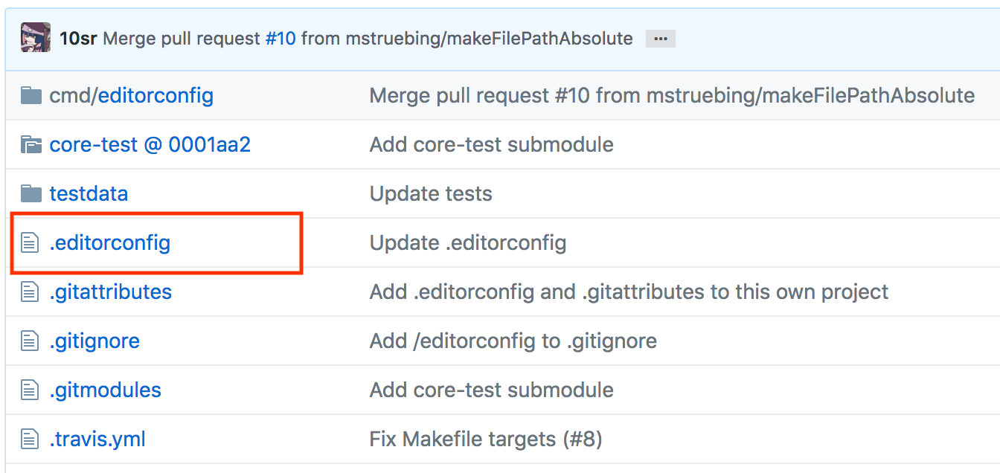

Wer sind wir?
Thomas Nordquist
Manuel Kress
Codebeispiel
function check(string){
string=string.split(':');
if (string[0]<24 && string[1]<60 && string[2]<60)
return true;
else return false;
}
Was macht der Code?
Lesbarkeit verbessern!
Codebeispiel
function check(string){
string=string.split(':');
if (string[0]<24 && string[1]<60 && string[2]<60)
return true;
else return false;
}
Einsatz von Whitespaces
function check(string) {
string = string.split(':');
if (string[0] < 24 && string[1] < 60 && string[2] < 60)
return true;
else
return false;
}
Verständnis verbessern!
Verständliche Benennung
function isValidTimeFormat(timeString) {
timeParts = timeString.split(':');
hours = timeParts[0];
minutes = timeParts[1];
seconds = timeParts[2];
if (hours < 24 && hours < 60 && seconds < 60)
return true;
else
return false;
}
Dokumentation
DocBlocks und Kommentare
/**
* Checks whether time in format HH:MM:SS
* @param {string} timeString
* @return {bool}
*/
function isValidTimeFormat(timeString) {
timeParts = timeString.split(':');
hours = timeParts[0];
minutes = timeParts[1];
seconds = timeParts[2];
if (hours < 24 && hours < 60 && seconds < 60)
return true;
else
return false;
}
Wartbarkeit
Vereinfachen!
/**
* Checks whether timeString is in format HH:MM:SS
* @param {string} timeString
* @return {bool}
*/
function isValidTimeFormat(timeString) {
timeParts = timeString.split(':');
hours = timeParts[0];
minutes = timeParts[1];
seconds = timeParts[2];
return (hours < 24) && (hours < 60) && (seconds < 60);
}
Verschiedene Entwicklungsumgebungen?
- Atom
- Sublime
- VSCode
- WebStorm
Wo ist das Problem?
 xkcd.com/1513/
- © CC BY-NC 2.5
xkcd.com/1513/
- © CC BY-NC 2.5
Wo ist das Problem?
Jede IDE hat eigene Style-Vorgaben.
Zeichensatz und newlines können mit Betriebssystem variieren.
Beispiele
Newlines
// Linux style newline
print("Hello World")\n
// Windows style newline
print("Hello World")\r\n
Datei mit Newlines unter Linux
var name = "Max Mustermann";\n
var firstname = "";\n
var idx = 0;\n
while (name[idx] != " ") {\n
firstname += name[idx];\n
idx = idx + 1;\n
}\n
Darstellung unter Linux
var name = "Max Mustermann";
var firstname = "";
var idx = 0;
while (name[idx] != " ") {
firstname += name[idx];
idx = idx + 1;
}
Darstellung unter Windows
var name = "Max Mustermann";var firstname = "";var idx
= 0;firstname += name[idx];idx = idx + 1;}
Lösung: EditorConfig
 https://editorconfig.orgLösung: EditorConfig
# Unix-style newlines with a newline ending every file
[*]
end_of_line = lf
insert_final_newline = true
charset = utf-8
# 4 space indentation
[*.py]
indent_style = space
indent_size = 4
https://editorconfig.org
Snake Case
Wörter mit "_" getrennt.``` // Variables var wifi_pre_shared_key = "Hello"; // Functions function array_merge(arr1, arr2) { ... } ```
z.B. C++, C, Rust, PHP, Ruby...
Camel Case
``` var wifiPreSharedKey = "Hello"; // Functions function arrayMerge(arr1, arr2) { ... } // Classes mostly begin with upper case class LibraryCard { ... } ```
z.B. Java, Swift, JavaScript, Rust, PHP, Ruby...
Camel Case oder Snake Case?
Best Practice:
Halte dich an Code Conventions der jeweiligen Programmiersprache.
Halte dich an den Stil des aktuellen Projektes.
Meaningful names
int d = 22; // elapsed time in days
Gute Namen anstelle von Kommentaren.
int elapsedTimeInDays = 22;
Meaningful names
Methoden sollten in der Regel ein beschreibendes Verb + Objekt enthalten oder eine Verbphrase sein.
var shopingCart = new ShoppingCart();
shoppingCart.addItem($book);
shoppingCart.save(); // Verbphrase
var amount = shoppingCart.calculateAmount();